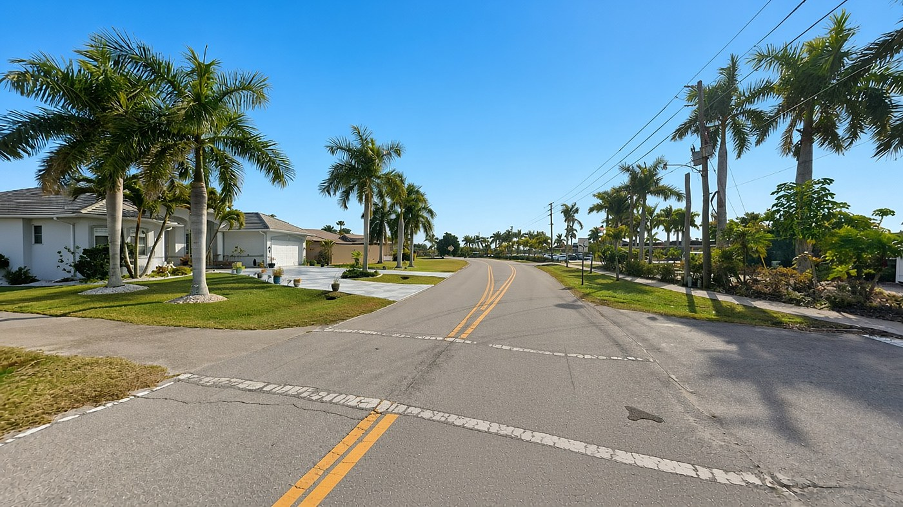

Draft preview for review. Not published. Expand Existing Page for /explore/punta-gorda/burnt-store-isles/. Goes live 2026-12-02. Images shown from local copies. Rollout batch
Burnt Store Isles Homes for Sale: Canals, Twin Isles Golf, and the BSI Lock

Explore · Punta Gorda · Burnt Store Isles
Burnt Store Isles is a deed-restricted canal and golf neighborhood in Punta Gorda, with its own canal district, its own boat lock, and Twin Isles Country Club at its center.
It is recorded as Punta Gorda Isles Section 15, but it runs separately from the rest of Punta Gorda Isles: a separate canal assessment, a separate advisory committee, and its own civic association. Here is what to know about Burnt Store Isles homes for sale.
The short version
About 1,400 homes. Roughly 1,000 on canals and 400 on the golf course, per the Burnt Store Isles Association.
Its own canal district. 18 miles of seawall, 9 miles of canals, and the BSI boat lock. FY2026: $1,010 per home.
Mostly 1980s to 2000s. Median build year 1998; about 44 percent built in 2000 or later.
Pool homes. 93 percent of single-family parcels have a pool.
1,132
single-family parcels in Section 15
$549,000
median county just value
$640,000
median qualified sale, 2025 and 2026
$1,010
FY2026 BSI canal assessment
Source: Charlotte County Property Appraiser, parcel file and subdivision list (downloaded Nov 20, 2026); Burnt Store Isles Association; City of Punta Gorda, Special Assessments.
Location
Where Burnt Store Isles is
South of central PGI, in the city.
Burnt Store Isles sits inside Punta Gorda city limits in ZIP 33950, south of the older Punta Gorda Isles sections. Main streets include Monaco Drive, Tripoli Boulevard, and Madrid Boulevard. The Burnt Store Isles Association describes it as a deed-restricted waterfront and golfing community with Twin Isles Country Club in the center.
US 41 and Burnt Store Road are close by, which puts Burnt Store Marina, Burnt Store Meadows, and downtown Punta Gorda all within a short drive.
Source: Burnt Store Isles Association; Charlotte County Property Appraiser, parcel file and subdivision list (downloaded Nov 20, 2026).
Canals
The BSI canal district and boat lock
Separate from the PGI district.
The City of Punta Gorda's Burnt Store Isles canal maintenance assessment district maintains 18 miles of seawall, dredges 9 miles of canals, manages mangroves, and covers the BSI boat lock. It was created in 1996, is guided by a five-member resident advisory committee, and is funded by an assessment on each parcel's tax bill.
| Fiscal year | Assessment |
|---|---|
| FY2021 | $460 |
| FY2022 | $560 |
| FY2023 | $860 |
| FY2024 | $985 |
| FY2025 | $985 |
| FY2026 | $1,010 |
Boat access is the first question for most buyers here. Ask how a home's canal reaches the lock and Charlotte Harbor, and how long the trip usually takes. Our boater buying guide lists the rest of the waterfront checks.
Source: City of Punta Gorda, Burnt Store Isles canal maintenance; City of Punta Gorda, Canal Maintenance Assessment Districts; City of Punta Gorda, Special Assessments.

Madrid Boulevard in Burnt Store Isles.
Homes
Burnt Store Isles homes for sale
Custom canal and golf homes.
The county lists about 1,132 single-family parcels and 79 vacant residential lots in Section 15. The oldest homes date to 1980; the median was built in 1998, with about 2,323 square feet of living area. The association describes homes as typically custom-built, from modest homes to larger Mediterranean-style houses.
The middle half of county just values runs from about $464,000 to $655,000. Burnt Store Isles also has villas and small condo communities, such as the Villas of Burnt Store Isles and Burnt Store Golf Villas, which the county records as separate plats.
Canal
Canal-front homes
Most of the neighborhood. Docks, lifts, and seawalls to inspect.
Ask
Route through the lock
Golf
Golf-course homes
Around 400 homes on Twin Isles fairways.
Ask
Club membership terms
Low-maintenance
Villas and condos
Smaller plats inside BSI with their own associations.
Ask
Association budget and reserves
County figures come from the Charlotte County Property Appraiser's public parcel file (downloaded November 20, 2026). Just value is the county's market value estimate on the latest certified roll, not an appraisal or a list price. Sale figures use each parcel's most recent recorded sale when that sale was qualified and dated 2025 or 2026.
Source: Charlotte County Property Appraiser, parcel file and subdivision list (downloaded Nov 20, 2026); Burnt Store Isles Association.
Before you buy
Four checks in Burnt Store Isles
Deed restrictions, the lock, and insurance.
Before buying in Burnt Store Isles, read the deed restrictions, confirm the boat route through the lock, check the seawall, dock, and lift, and get flood and wind insurance quotes during your inspection period.
Deed restrictions
BSI is deed-restricted. Read them before you plan a pool, fence, or addition.
The lock and your boat
Confirm the lock and route work for your boat and how often you plan to go out.
Waterfront structures
Inspect the dock and lift; ask about the seawall and cap.
Insurance and flood
Pull the FEMA flood zone and quotes early. Our insurance guide covers what moves the price.
See our homeowners insurance guide and homestead exemption guide for the cost side.
Source: Burnt Store Isles Association; FEMA Flood Map Service Center.
FAQs
Burnt Store Isles: common questions
Is Burnt Store Isles in the city of Punta Gorda?
Yes. Burnt Store Isles is Punta Gorda Isles Section 15, inside the City of Punta Gorda in ZIP 33950.
How many homes are in Burnt Store Isles?
The Burnt Store Isles Association says there are approximately 1,000 canal-front and 400 golf-course homes, plus villas, condos, and vacant lots.
Does Burnt Store Isles have a boat lock?
Yes. The city's Burnt Store Isles canal district maintains 18 miles of seawall, 9 miles of canals, and the BSI boat lock. Ask how the lock affects your trip to Charlotte Harbor and your boat's size.
What is the Burnt Store Isles canal assessment?
The FY2026 Burnt Store Isles canal maintenance assessment is $1,010 per single-family parcel, per the City of Punta Gorda.
What golf course is in Burnt Store Isles?
Twin Isles Country Club sits in the center of the community, according to the Burnt Store Isles Association. Membership is a separate decision from buying a home.
What do Burnt Store Isles homes cost?
The median county just value of a Burnt Store Isles single-family home is about $549,000, and the median qualified 2025 and 2026 home sale was about $640,000.
Thinking about Burnt Store Isles?
We will map the route from a home to the lock and the harbor, pull recent sales on that canal, and get the deed restrictions in your hands. Call or text The Helgemo Team at (941) 770-2275.
The office is at 320 Cross Street, Punta Gorda, Florida 33950. You can also meet Brian Helgemo or read more about the team.
Sources: Burnt Store Isles Association; City of Punta Gorda, Burnt Store Isles canal maintenance; City of Punta Gorda, Special Assessments; Charlotte County Property Appraiser, parcel file and subdivision list (downloaded Nov 20, 2026); FEMA Flood Map Service Center. Checked November 20, 2026.